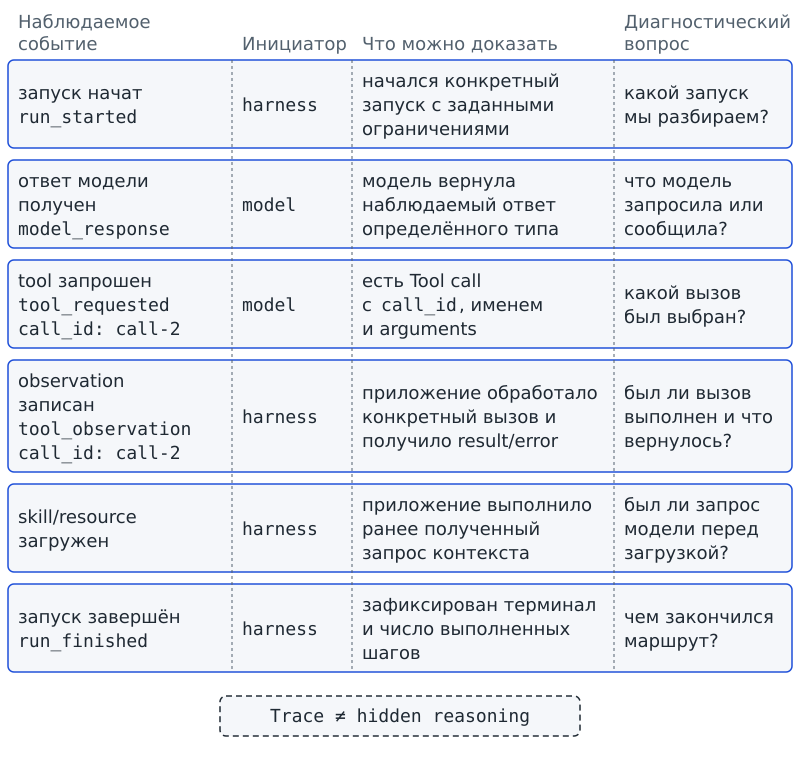
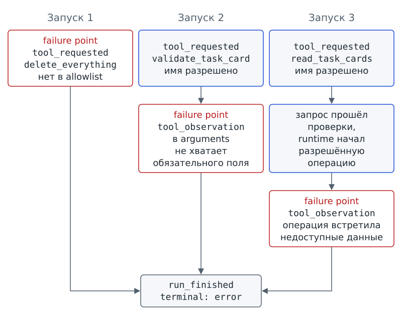
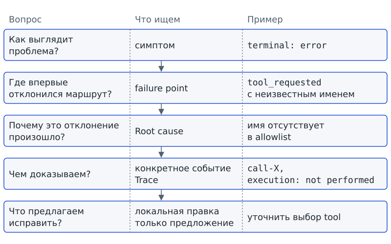

Глава 12. Traces: как понять, что происходило на самом деле?¶
С чего всё началось¶
До Фестиваля науки осталось несколько дней. Утром программа «Дежурный» подготовила сводку, в которой неожиданно не оказалось одной заблокированной задачи. Аня сразу предположила, что модель выбрала не тот tool. Марк возразил: модель могла выбрать tool правильно, а ошибка возникла уже при чтении карточек. Третий участник команды предложил ещё одну версию: чтение прошло нормально, но после observation приложение неверно продолжило маршрут.
Все трое видели на экране одинаковый финальный текст. Сводка показывала симптом: заблокированная задача пропущена. Но по сводке нельзя было определить, на каком шаге впервые возникло отклонение. Каждая из трёх версий объясняла плохой результат, а подтверждения не было ни у одной.
Аня открыла знакомый event log из главы 7 и сказала: «Тогда нужно просто сохранить побольше строк». Марк посмотрел на неё и спросил: какие именно строки нужны, чтобы другая группа смогла восстановить запуск, а не сочинить красивую историю задним числом?
Вопрос-Прогноз. Какие наблюдаемые события одного запуска нужно сохранить, чтобы по ним можно было доказать, где маршрут впервые отклонился и почему?
Главный вопрос главы. Как понять, что происходило на самом деле?
Фигура 33. Три гипотезы у одной неверной сводки
После главы ты сможешь¶
- восстанавливать порядок наблюдаемых событий одного запуска;
- объяснять разницу между финальным результатом, Event log и полной записью наблюдаемых событий запуска;
- различать события, инициированные моделью, и события, записанные harness;
- связывать Tool call и соответствующий observation по
call_id; - находить первую точку отклонения в неудачном маршруте и формулировать первую существенную причину только по наблюдаемым свидетельствам;
- составлять короткий отчёт о сбое с указанием места, причины и доказательства;
- объяснять, какие данные нельзя бездумно складывать в Trace.
Урок 23. Trace: что происходило на самом деле¶
1. Правильный итог тоже может обмануть¶
Начнём с результата, который не вызывает подозрений. Представь, что «Дежурный» выдал правильную сводку: блокер назван, следующий шаг указан, формат соблюдён. На первый взгляд маршрут можно не разбирать, раз результат хороший.
Однако к правильному тексту система могла прийти разными путями. Ожидаемая последовательность выглядит так:
- Система получает запрос.
- Модель выбирает разрешённый tool.
- Приложение выполняет операцию.
- Система получает observation.
- Работа завершается.
В другом запуске система могла сначала сделать лишний вызов, получить ошибку и лишь затем случайно получить такой же правильный текст. Финальные строки совпали бы, но второй маршрут содержал бы лишнее действие. Правильная сводка не отменяет уже произошедшую ошибку.
Плохой ответ из начальной сцены тоже не доказывает, что «ошиблась модель». После решения модели работают Dispatcher, runtime, инструменты и логика остановки. Чтобы найти место сбоя, нужно видеть последовательность наблюдаемых действий и результатов, а не только конец работы.
Проверь себя на ходу. Два запуска дали одинаковый правильный текст. В одном был один разрешённый Tool call, во втором — сначала запрещённый вызов, потом разрешённый. Можно ли по финальному тексту считать маршруты одинаковыми?
2. От отдельных строк к Trace¶
В главе 7 мы видели Event log: последовательный список запросов tool, observation и решений, связанных по call_id. По журналу можно было восстановить порядок нескольких Tool calls и проверить остановку после терминального решения. Теперь нужно проследить один запуск от начала до завершения, включая события до запросов tool и между ними.
Trace / трассировка — последовательность наблюдаемых событий одного запуска.
По Trace, или трассировке, мы отвечаем на вопрос «что можно наблюдать в работе системы по ходу конкретного запуска?», а не «что система думала?». Например, в запись могут попасть:
- Начало запуска.
- Подготовка доступного контекста.
- Ответ модели.
- Запрос tool.
- Результат или ошибка.
- Загрузка нужного ресурса.
- Завершение запуска.
Не каждый маршрут содержит все перечисленные события. Если система не запрашивала tool, в Trace не должно быть записи о таком запросе.
Скрытые рассуждения модели сохранять не нужно и не следует. Для проверки маршрута нужны наблюдаемые действия и результаты. Запись Tool call показывает сформированный запрос, но не открывает внутренний ход рассуждений, который привёл модель к выбору.
Trace можно сравнить с записью камер на перекрёстке. По видеозаписи видно, какая машина проехала первой и где машины соприкоснулись, но мыслей водителей камера не сообщает. Порядку движения здесь соответствует порядок программных событий. Сравнение помогает отделить наблюдение от догадки; сама трассировка состоит из структурированных записей, а не из видеокадров.
3. Одна запись внутри Trace¶
В одной строке Trace может быть записан запрос tool, а в другой строке записан полученный observation. Каждая строка описывает отдельное наблюдаемое событие. Event / событие — одна наблюдаемая запись внутри Trace: что произошло, кто инициировал шаг и с какими диагностическими полями он связан.
Event переводится как «событие». Чтобы прочитать запись, задай три вопроса:
- Что произошло? Ответ даёт тип события.
- Кто инициировал наблюдаемый шаг? Для запроса модели указано
initiator: model; для выполнения, загрузки или записи observation указаноinitiator: harness. - С чем связано событие? Для Tool call связь задаёт знакомый
call_id.
Инициатор шага не обязательно совпадает с программой, которая записывает строку в файл. Harness ведёт журнал и для собственных действий, и для наблюдаемых запросов модели.
Как и в главе 9, модель может запросить load_skill или read_skill_resource, а фактическую загрузку выполняет приложение. Поэтому запись запроса должна предшествовать записи загрузки. Если из Trace следует, будто harness сам активировал skill без запроса модели, запись не соответствует контракту рассматриваемого маршрута.
Назовём запись о конкретном запросе tool tool call record — записью Tool call. Такая запись фиксирует, что в определённый момент модель сформировала запрос с конкретными id, name и arguments. Запись не создаёт ни нового вида tool, ни второго вызова.
Ещё одно наблюдаемое действие связано с подтверждением человеком. Approval event / событие подтверждения — запись о наблюдаемом факте запроса, получения или отказа подтверждения. Approval event, или событие подтверждения, позволяет увидеть, что программа запросила подтверждение и чем запрос закончился. Наличие записи само по себе не объясняет, когда подтверждение требуется и как программа останавливает работу в ожидании ответа.
Проверь себя на ходу. В Trace есть
tool_requestedсinitiator: model, но нет последующегоtool_observationдля того жеcall_id. Какие два разных объяснения нужно проверить, прежде чем говорить «tool сломался»?
4. Центральный артефакт: карта Trace¶
Какие записи нужны для восстановления запуска? Карта событий связывает каждую запись с вопросом, на который можно ответить по её полям. Максимальный объём сохранённых данных для такой проверки не требуется.
| Наблюдаемое событие | Инициатор | Что можно доказать | Диагностический вопрос |
|---|---|---|---|
| запуск начат | harness | начался конкретный запуск с заданными ограничениями | какой запуск мы разбираем? |
| ответ модели получен | model | модель вернула наблюдаемый ответ определённого типа | что модель запросила или сообщила? |
| tool запрошен | model | есть Tool call с call_id, именем и arguments |
какой вызов был выбран? |
| observation записан | harness | приложение обработало конкретный вызов и получило result/error | был ли вызов выполнен и что вернулось? |
| skill/resource загружен | harness | приложение выполнило ранее полученный запрос контекста | был ли запрос модели перед загрузкой? |
| запуск завершён | harness | зафиксирован терминал и число выполненных шагов | чем закончился маршрут? |
Строка tool_requested доказывает запрос, но не выполнение. Строка tool_observation может показать, выполнен вызов или отклонён, но не объясняет сама по себе, почему модель выбрала указанное имя. Событие run_finished сообщает итог маршрута, но не заменяет предшествующие записи.
Допустим, бюро последовательно проверяет две карточки разных групп одним tool. Имя операции в обоих запросах одинаковое. Если проверка первой карточки прошла, а второй вернула ошибку, по одному имени нельзя определить, к какой карточке относится ошибка. Нужны идентификаторы конкретных вызовов.
Поэтому Tool call с call_id: call-2 связывают с observation именно call-2, а не соседнего вызова. Без идентификаторов журнал похож на набор чеков без номеров заказов: записи есть, но соответствие трудно доказать. Номеру заказа в сравнении соответствует call_id; в программе связь задаётся полем записи, а не бумажным чеком.
5. Знакомый Event log как узкая линза¶
Команда из главы 7 показывает события двух Tool calls. Запросы для показа заданы авторским replay-сценарием, а не получены от живой модели.
Перед запуском сделай прогноз: ошибка второго вызова должна стереть первый успешный result или оба результата останутся видны по своим call_id?
# запуск из корня starter
python dispatcher_demo.py run two-calls
mode: replay
origin: synthetic_script — авторский сценарий, не запись модели
event: tool_requested | call_id: call-1 | tool: read_task_cards
event: tool_observation | call_id: call-1 | tool: read_task_cards | execution: performed | outcome: result | decision: continue
event: tool_requested | call_id: call-2 | tool: validate_task_card
event: tool_observation | call_id: call-2 | tool: validate_task_card | execution: performed | outcome: tool error | decision: needs_input | error: нет карточки с указанным id
event: run_finished | terminal: needs_input | steps: 2
Сначала записан запрос call-1, затем его observation с результатом и решением continue. После запроса call-2 записан другой observation: операция завершилась ошибкой, а приложение выбрало needs_input. Первый результат остался в журнале. По строкам можно восстановить обе попытки, а число steps: 2 согласуется с двумя отметками execution: performed.
Чем такая запись отличается от более широкой трассировки? Event log главы 7 показывал запросы, observation и решения. Trace главы 12 может также включать начало запуска, подготовку контекста, наблюдаемый ответ модели и загрузку skill/resource. Для диагностики нужны события всего рассматриваемого маршрута, а не только участка с вызовами tool.
6. Где Trace уже подключён к agent loop¶
В starter события уже записывает знакомый run_agent. Компонент записи называется TraceRecorder. Ниже показана часть функции, которая проверяет путь будущего файла и создаёт компонент записи перед основным маршрутом.
# фрагмент: school_agent/agent.py
def run_agent(adapter, *, workspace_root=WORKSPACE_ROOT, scenario="success",
max_steps=MAX_STEPS, max_retries=MAX_RETRIES, trace_relative_path=None,
profile=None):
if type(max_steps) is not int or not 1 <= max_steps <= MAX_STEPS:
raise ValueError("max_steps должен быть от 1 до 5")
if type(max_retries) is not int or not 0 <= max_retries <= MAX_RETRIES:
raise ValueError("max_retries должен быть 0 или 1")
trace_path = None if trace_relative_path is None else resolve_workspace_path(
trace_relative_path, workspace_root=workspace_root)
if trace_path is not None:
allowed = resolve_workspace_path("traces", workspace_root=workspace_root)
try:
trace_path.relative_to(allowed)
except ValueError as exc:
raise ValueError("trace разрешён только внутри workspace/traces") from exc
if trace_path.exists():
raise ValueError("trace уже существует; выбери новое имя запуска")
trace = TraceRecorder(trace_path)
Слово def начинает описание функции run_agent, а в скобках перечислены параметры. Условия if проверяют допустимость значений и пути; при нарушении программа сообщает об ошибке через raise ValueError. В последней строке создаётся TraceRecorder.
Для пути используется trace_relative_path. Значение None означает, что путь не передан. Если путь указан, программа проверяет два условия:
- Файл должен находиться внутри
workspace/traces/. Переданный путь не даёт модели права записать журнал в произвольное место. - Файл с выбранным именем ещё не должен существовать. Для нового запуска нужно новое имя, иначе прежние свидетельства могли бы быть потеряны.
Параметр profile необязателен. Он предназначен для настройки собственного «Дежурного» в папке workspace/my_agent/. Без переданного параметра действует маршрут, описанный в этой главе.
Фрагмент показывает проверки пути и правило «не перезаписывать существующий Trace». Внутреннего устройства TraceRecorder и содержимого будущих записей здесь нет. Поэтому по фрагменту нельзя заключить, что любой текст журнала безопасно публиковать.
7. Практика A: собери запуск из карточек¶
Объединись с двумя одноклассниками и получи вместе с группой семь перемешанных карточек:
tool_observation call-2;model_response;run_finished;tool_requested call-1;model_response;tool_observation call-1;tool_requested call-2.
На каждой карточке указаны initiator и минимальные поля, но нет номера позиции в запуске.
Собери с группой последовательность только по причинным связям. Проверь три правила:
- Запрос tool предшествует observation с соответствующим
call_id. - Если в маршруте есть загрузка ресурса, запрос модели должен предшествовать загрузке.
- После
run_finishedне должно быть выполненных шагов продолжающегося маршрута.
Передай карту соседней группе для проверки. Соседняя группа выбирает две связи и спрашивает, почему одна карточка должна предшествовать другой. Объясни порядок через call_id, тип события или правило инициатора. Ответ «так логичнее» доказательства не даёт.
Результат практики A: собранная карта Trace и две доказанные связи между событиями.
8. Практика B: запиши новый Trace¶
Запиши Trace с помощью существующего run_agent. Команда главы 12 запускает знакомый replay-маршрут и передаёт путь нового файла внутри workspace/traces/; отдельный agent loop команда не создаёт.
Файл имеет расширение .jsonl. JSONL — текстовый формат, где каждая строка содержит отдельный JSON-объект. В JSONL каждая строка читается отдельно. В нашем файле одна строка описывает одно событие, поэтому порядок строк задаёт последовательность записанных событий. Формат файла не добавляет агенту новых действий.
Перед запуском сделай прогноз. В сценарии missing_file две выполненные попытки чтения завершаются терминалом error. Должна ли программа перезаписать старый Trace-файл с тем же именем, если файл уже существует?
# запуск из корня starter
python trace_demo.py record --scenario missing_file --out traces/ch12_lesson23.jsonl
mode: replay
trace: traces/ch12_lesson23.jsonl
terminal: error
origin: synthetic_script — авторский сценарий, не запись модели
Новый файл содержит события учебного запуска, а не скрытые рассуждения модели. Прочитай запись в компактном виде:
# запуск из корня starter
python trace_demo.py show traces/ch12_lesson23.jsonl
trace: traces/ch12_lesson23.jsonl
run_started | initiator: harness
context_prepared | initiator: harness
model_response | initiator: model
tool_requested | initiator: model | call_id: m1 | tool: read_task_cards
tool_observation | initiator: harness | call_id: m1 | outcome: tool error | decision: continue
context_prepared | initiator: harness
model_response | initiator: model
tool_requested | initiator: model | call_id: m2 | tool: read_task_cards
tool_observation | initiator: harness | call_id: m2 | outcome: tool error | decision: error
run_finished | initiator: harness | terminal: error | steps: 2
Пометка initiator: model здесь обозначает роль запроса в авторском replay-сценарии. Пометка не означает, что запрос получен от живой модели: происхождение явно указано как synthetic_script. Выполнение и observation фиксирует harness.
Запрос m1 связан со своим observation и решением continue, запрос m2 связан со своим observation и решением error. Компактный вывод показывает два исхода tool error и итог steps: 2. Само слово tool error не различает отказ до выполнения и ошибку начатой операции; две выполненные попытки заданы условиями сценария missing_file.
Идентификаторы m1 и m2 заданы сценарием, а не программой записи. В главе 7 использовались call-1 и call-2. В текущем показе используется общий курсовой replay, а не случай главы 7. Имена позволяют различить показанные сценарии, но правило связи запроса с observation остаётся прежним.
После просмотра напиши 5–7 строк собственного объяснения. В объяснении укажи:
- Какое событие доказывает выбор tool.
- Какое событие показывает наблюдаемый результат обработки вызова.
- Где видно решение продолжить.
- Где указан терминал.
- Почему финальный
errorне позволяет стереть первый вызов из истории.
Объясни связи своими словами, а не переписывай готовый вывод программы.

Фигура 34. Карта Trace
9. Мини-проверка урока 23¶
- Что такое Trace и чего он не обязан содержать?
- Чем
tool_requestedотличается отtool_observation? - Зачем Trace хранит
call_id? - Почему загрузка skill/resource должна следовать за наблюдаемым запросом модели?
- Что доказывает правило «существующий Trace не перезаписывать»?
Ответы¶
- Trace — последовательность наблюдаемых событий одного запуска; скрытые рассуждения модели в него не входят как обязательный артефакт.
- Первое событие фиксирует запрос модели; второе — результат обработки конкретного вызова приложением.
- Чтобы однозначно связать запрос и его result/error.
- Иначе запись выглядела бы так, будто harness сам выбрал и загрузил процедуру без запроса модели.
- Что один запуск не уничтожает свидетельства другого; для нового запуска выбирается новое имя файла.
Выходной билет урока 23¶
Запиши четыре строки:
Trace нужен, чтобы …
tool_requested доказывает …
tool_observation доказывает …
Trace не является …
Если в первой строке ты написал «чтобы узнать мысли модели», вернись к определению Trace. Если две средние строки означают одно и то же, проверь, различил ли ты запрос операции и обработку вызова приложением.
Урок 24. Ищем ошибку по Trace¶
1. Один терминал — три разных маршрута¶
Представь три запуска, каждый из которых заканчивается строкой terminal: error. По последней строке легко решить, что причина одна: «система сломалась». Но до остановки произошли разные события.
- В первом запуске модель запросила имя tool, которого нет в allowlist. Приложение отклонило вызов.
- Во втором запуске имя разрешено, но в arguments отсутствует обязательное поле. Проверка не пропустила вызов к выполнению.
- В третьем запуске запрос прошёл проверки, runtime начал разрешённую операцию, и операция встретила недоступные данные.
Три одинаковых терминала сообщают о неуспешном завершении, но не различают три места сбоя. Поэтому диагностику начинают с начала маршрута. Нужно найти первое наблюдаемое событие, после которого фактические шаги перестали соответствовать ожидаемым. Лишь после этого можно обосновать причину и выбрать место исправления.
2. Observability: можем ли мы вообще понять систему¶
Журнал может содержать только две строки: «старт» и «ошибка». Команда узнает, что запуск начался и завершился неуспешно, но не сможет объяснить, что случилось между этими событиями. Само наличие записи ещё не делает поведение системы понятным.
Observability / наблюдаемость — возможность понять поведение системы по журналам, traces, состоянию и проверкам.
Observability, или наблюдаемость, позволяет по сохранённым свидетельствам ответить на вопросы:
- Какой запрос пришёл?
- Что было выполнено?
- Что вернулось?
- Почему маршрут остановился?
На первый взгляд предложение Ани «сохранить побольше строк» должно помочь. Но объём журнала не заменяет нужных полей и связей. Если среди сотен посторонних строк нет результата нужного вызова, вопрос о результате останется без ответа. Лишние строки могут и мешать: нужное событие теряется среди посторонних записей.
Observability не равна безопасности, качеству модели или полной записи контекста. Хорошо наблюдаемая система тоже может ошибаться. Отличие состоит в том, что по сохранённым свидетельствам можно найти место ошибки.
Наблюдаемость похожа на приборную панель лабораторной установки: несколько подходящих измерений помогают понять режим работы лучше, чем непрерывная съёмка всего кабинета. Выбранным измерениям в сравнении соответствуют события, нужные для диагностики. Однако программные события выбирают по контракту системы; физическими датчиками события не служат.
Проверь себя на ходу. В Trace записаны только
run_startedиrun_finished: error. Журнал существует. Достаточно ли этого для хорошей Observability именно при поиске причины сбоя?
3. Failure point: где маршрут впервые стал неправильным¶
Терминал сообщает, чем закончилась работа. Для исправления нужно найти другое место: событие, после которого маршрут впервые перестал соответствовать ожидаемому. Failure point — первое наблюдаемое событие, после которого фактический маршрут перестаёт соответствовать ожидаемому для данного случая.
Failure point можно перевести как «точка отклонения». В трёх рассматриваемых случаях точка находится на разных этапах:
- Если модель запросила
delete_everything, которого нет в allowlist, неверный выбор уже виден вtool_requested. - Если имя tool правильное, но arguments не прошли проверку, анализ связывает отклонение с отказом при обработке вызова.
- Если проверки пройдены, а операция встретила недоступные карточки, отклонение видно на стороне выполнения и observation.
Должна ли точка отклонения находиться непосредственно перед терминалом? Не обязательно. После первой ошибки программа может записать служебные события и корректно завершить работу, в том числе добавить run_finished. Последняя строка показывает завершение, но не переносит первое отклонение в конец журнала.
Сходное различие есть в решении задачи на доске. Первая неверная строка важнее последней: дальнейшие шаги могут опираться на ошибку. Первой неверной строке здесь соответствует первое наблюдаемое отклонение. Однако в Trace проверяют программный маршрут, а не математические преобразования.

Фигура 35. Один терминал — три маршрута
4. Root cause: не место, а существенная причина¶
Failure point отвечает на вопрос «где впервые видно отклонение?». Следующий вопрос касается причины: что привело к отклонению? Одного указания места для ответа недостаточно.
Root cause / первопричина — первая существенная причина, из-за которой маршрут выполнения отклонился от ожидаемого.
Root cause, или первопричину, нужно подтвердить конкретным событием Trace. В рассматриваемых случаях причины различаются:
- Запрошенная операция отсутствует в allowlist.
- В arguments не передано обязательное поле.
- После разрешённого начала операции нужные данные оказались недоступны.
Фраза «что-то пошло не так» не различает эти причины и не помогает выбрать место исправления. Но и подробная догадка не заменяет свидетельства. Допустим, после попытки чтения карточек записано cards_unavailable. Версия «кто-то удалил карточки» могла бы объяснить недоступность, однако без записи об удалении Trace не подтверждает именно эту версию.
Root cause не означает «виновник». Задача не состоит в том, чтобы обвинить модель, программиста или пользователя. Нужно найти первую существенную причину, подтверждённую наблюдением, и предложить направленную на причину техническую правку.
Различие симптома и причины можно сравнить с неработающей лампой в лабораторной установке. Лампа не горит, а причина может находиться раньше по цепи, например в перегоревшем предохранителе. Неработающей лампе соответствует видимый симптом; возможную причину ещё требуется подтвердить. При разборе программы подтверждением служат события Trace, а не физический осмотр устройства.
Если Trace показывает разрешённый Tool call с корректными arguments и лишь затем cards_unavailable, нельзя без доказательств объявлять причиной выбор модели. Если же первым отклонением был запрос неизвестного имени, нет основания обвинять runtime: выполнение вообще не началось.
5. Центральный приём диагностики: симптом → point → cause¶
Один сбой нужно описать с нескольких сторон. Симптом показывает проблему, точка отклонения указывает место, а причина объясняет отклонение. Для каждого утверждения требуется наблюдаемое свидетельство.
| Вопрос | Что ищем | Пример |
|---|---|---|
| Как выглядит проблема? | симптом | terminal: error |
| Где впервые отклонился маршрут? | failure point | tool_requested с неизвестным именем |
| Почему это отклонение произошло? | Root cause | имя отсутствует в allowlist |
| Чем доказываем? | конкретное событие Trace | call-X, execution: not performed |
Сложная статистика для такой проверки не нужна. Нужен определённый порядок:
- Найди факты в Trace.
- По фактам установи точку отклонения.
- Обоснуй Root cause.
Если начать с любимой гипотезы, легко выбрать только строки, которые с гипотезой согласуются, и пропустить остальные.
Короткий incident report, или отчёт о сбое, объединяет симптом, failure point, Root cause и доказательство. К четырём полям добавляют пятое: «локальная правка». В поле записывают предложение, что именно исправить, например выбор tool, arguments или обработку недоступных данных. Предложение ещё не означает, что процедура изменена и исправление принято.

Фигура 36. Incident report
6. Практика A: три одинаковых error¶
Объединись с одноклассниками и получи вместе с группой три бумажных Trace. Во всех трёх последняя карточка содержит run_finished | terminal: error, а предшествующие события различаются:
- В Trace A есть запрос неизвестного tool и отказ до выполнения.
- В Trace B имя разрешено, но arguments отклонены до runtime.
- В Trace C запрос прошёл проверки, операция началась и вернула ошибку данных.
Сначала отметь карандашом первое событие отклонения в каждом маршруте. Пока не называй Root cause. Затем вместе с группой заполни таблицу из пяти полей:
симптом.failure point.Root cause.доказательство.локальная правка.
Передай отчёт соседней группе сначала без исходного Trace. Пусть группа определит, какую запись нужно искать по указанному доказательству. Затем передай соответствующий Trace, чтобы соседи нашли запись и проверили, подтверждает ли запись вывод отчёта.
Результат практики A: три incident reports и одно объяснение, почему одинаковый терминал не означает одинаковую Root cause.
7. Практика B: анализатор трёх traces¶
Для анализа подготовлены три файла. Программа читает файлы, не изменяя их. Во всех трёх случаях записан одинаковый плохой терминал, но первое наблюдаемое отклонение находится в разных местах. Анализатор считает известные типы событий и применяет правила к подготовленным учебным случаям; мысли модели программа не определяет.
Запусти анализ случая с неверным именем tool:
# запуск из корня starter
python trace_demo.py analyze workspace/ch12/cases/wrong_tool.jsonl
trace: ch12/cases/wrong_tool.jsonl
terminal: error
tool_calls: 1
errors: 1
approval_events: 0
failure_point: tool_requested call-X delete_everything
root_cause: unknown_tool
Затем проверь случай с неверными arguments:
# запуск из корня starter
python trace_demo.py analyze workspace/ch12/cases/invalid_arguments.jsonl
trace: ch12/cases/invalid_arguments.jsonl
terminal: error
tool_calls: 1
errors: 1
approval_events: 0
failure_point: tool_observation call-2 validate_task_card
root_cause: invalid_arguments
Наконец, проверь ошибку уже начавшейся операции:
# запуск из корня starter
python trace_demo.py analyze workspace/ch12/cases/tool_exception.jsonl
trace: ch12/cases/tool_exception.jsonl
terminal: error
tool_calls: 1
errors: 1
approval_events: 0
failure_point: tool_observation call-3 read_task_cards
root_cause: cards_unavailable
Во всех трёх сводках указаны один Tool call, одна ошибка и ноль записанных событий подтверждения. Терминал тоже совпадает. Счётчики позволяют сравнить число событий, но не различают причины.
Для диагностики сравни две последние строки каждого вывода. Первый маршрут отклонился при выборе неизвестного имени, второй отклонился при проверке arguments, а третий встретил проблему после начала разрешённой операции. Поэтому одинаковые счётчики не дают основания предложить одинаковое исправление.
Напиши 5–7 строк своего incident report для одного случая. Не переписывай машинный вывод. Объясни:
- Почему выбран именно этот failure point.
- Какое событие служит доказательством.
- Какую область системы нужно проверить первой.
Фраза «модель плохая» без ссылки на событие не подтверждает причину сбоя.
8. Ошибка Trace тоже должна быть наблюдаемой¶
До сих пор мы предполагали, что JSONL читается без ошибок. Но диагностический файл тоже может быть непригоден для анализа. Например:
- Строка оборвалась.
- Обязательное поле отсутствует.
call_idobservation не соответствует ни одному запросу.
При таком входе анализатор должен явно сообщить, что Trace нельзя считать пригодным для расследования. Если молча пропустить повреждённую строку, получится отчёт, внешне убедительный, но основанный на неполной истории.
Допустим, бюро видит запрос чтения карточек, а соответствующего observation нет. Приложение могло остановиться до обработки запроса; мог быть потерян и сам фрагмент журнала с результатом. Оба объяснения остаются версиями, а не установленными фактами. Без дополнительных свидетельств отсутствие строки не доказывает, что tool сломался.
Отдельная проверка касается пути к файлу. Анализатор читает учебные Trace только внутри разрешённой рабочей области. Путь ../outside.jsonl не даёт права исследовать произвольные файлы компьютера.
9. Обязательные проверки: должен / не должен / ошибка / граница¶
Должен¶
Trace должен сохранять порядок наблюдаемых событий одного запуска и связывать Tool call с observation по call_id. Для запроса модели поле initiator должно содержать model. Выполнение и observation фиксирует harness.
Не должен¶
Финальный ответ или терминал не должен заменять Trace при диагностике. Анализатор не должен печатать скрытые рассуждения модели и автоматически считать любой terminal: error доказательством ошибки модели.
Ошибка¶
Если JSONL повреждён, call_id не связан с запросом или обязательное событие отсутствует, анализатор должен явно отказать в диагностике. Программа не должна представлять неполный Trace как основание для полноценного incident report.
Граница¶
Новый Trace записывается только внутри workspace/traces/ и не перезаписывает существующий файл. Анализ read-only, то есть только чтение, не меняет карточки проекта. Автоматическое скрытие значений по названиям ключей не доказывает отсутствия секретов: секрет мог попасть внутрь произвольной текстовой строки.
10. Врезка безопасности: журнал не должен стать складом данных¶
Безопасность
Для диагностики сохраняют не «всё на всякий случай», а события и минимальные поля, нужные для восстановления маршрута:
- Тип события.
- Инициатора, указанного в поле initiator.
- Идентификатор вызова.
- Наблюдаемый результат.
- Решение.
- Терминал.
Не записывай в Trace пароли, API-токены и другие секреты. Не сохраняй в Trace скрытые рассуждения модели. Программа может скрывать значения полей по названиям. Такой фильтр полезен, но не даёт гарантии: секрет может оказаться в свободном тексте под неожиданным ключом.
Перед публикацией или передачей Trace другой группе человек отдельно просматривает журнал. Observability требует достаточных свидетельств, а не максимального копирования данных.
11. Мини-проверка урока 24¶
- Что такое Observability?
- Чем failure point отличается от последнего события Trace?
- Что такое Root cause?
- Почему
terminal: errorнедостаточно для вывода «ошибка модели»? - В каком случае проблема находится до runtime, а в каком — уже во время выполнения?
- Почему повреждённый Trace нельзя тихо анализировать как полный?
Ответы¶
- Возможность понять поведение системы по журналам, traces, состоянию и проверкам.
- Failure point — первое наблюдаемое существенное отклонение; после него могут идти корректные служебные события завершения.
- Первая существенная причина, из-за которой маршрут отклонился от ожидаемого.
- Потому что одинаковый терминал может возникать из разных мест и причин: выбора tool, arguments, runtime или обработки observation.
- Неизвестное имя/некорректные arguments могут быть остановлены до выполнения;
cards_unavailableпослеexecution: performedотносится к уже начавшейся операции. - Иначе incident report будет выглядеть доказанным, хотя часть наблюдаемых событий потеряна.
Выходной билет урока 24¶
Выбери один Trace и запиши четыре строки:
симптом: …
failure point: …
Root cause: …
evidence: …
Проверь поле evidence («доказательство»): укажи конкретное наблюдаемое событие, а не повторяй свою гипотезу другими словами.
Зачем это тебе¶
На лабораторной работе программа может выдать странный итоговый график. Команда спорит: датчик вернул плохие данные, формула обработки дала ошибку или выбрана не та серия измерений? По сохранённым шагам можно найти первое отклонение и не переделывать всю работу вслепую.
В общем проекте класса файл итоговой презентации может не появиться, хотя программа сообщила «готово». По сообщению нельзя установить, запрашивалось ли сохранение, выполнилась ли операция и куда записан результат. Trace помогает искать свидетельство выполненного действия, а не доверять словам о действии.
При программировании тест может сообщить fail. Сообщение показывает только симптом. События запуска помогают различить ситуации: функция не была вызвана, получила неверные входные данные или начала работу и вернула ошибку. Когда место сбоя найдено, можно исправлять соответствующий участок, а не всю программу.
Шаг сквозного проекта¶
После главы 11 «Дежурный» умеет проходить Eval-набор, а команда хранит Baseline. Теперь к результату неуспешного Test case добавляется Trace конкретного запуска. Eval отвечает на вопрос «какой случай не прошёл критерий?», а Trace помогает восстановить наблюдаемый маршрут этого случая.
В проекте появляются схема Trace и короткий incident report. Для расследуемого сбоя команда записывает:
- Симптом.
- Failure point.
- Root cause.
- Событие-доказательство.
Если свидетельства нет, причина остаётся гипотезой. Нельзя выдавать предположение за установленный факт.
На этапе Контрольная точка 6 команда должна уметь диагностировать собственный запуск. Требование не состоит в том, чтобы система никогда не ошибалась. Команда должна находить место существенного сбоя по наблюдаемым данным и объяснять вывод другой группе.
Достраиваем «Дежурног
Помести в папку workspace/my_agent/ файл 12_trace.json с содержимым {"enabled": true}. Настройка включает запись Trace запусков в workspace/traces/dezhurny/.
Выполни две команды ниже строго в указанном порядке, без другого run между ними. Команда trace --last читает последний Trace, поэтому должна прочитать запись именно первого запуска. В проверочном выводе файл называется run-001.jsonl; в твоей папке номер может отличаться, поскольку зависит от уже существующих файлов Trace.
# запуск из корня starter
# фикстура: tests/fixtures/ch12/12_trace.json -> workspace/my_agent/12_trace.json
python dezhurny.py run
dezhurny: run
goal: не настроено (глава 1)
config: workspace/my_agent
model: replay — авторский сценарий, не запись модели
scenario: success
stop_policy: max_steps 5, max_retries 1 (по умолчанию, глава 2)
tools: allowlist диспетчера (по умолчанию, глава 7)
Шаг 1 | read_task_cards | continue
Шаг 2 | validate_task_card | continue
Шаг 3 | validate_task_card | continue
Шаг 4 | validate_task_card | continue
Шаг 5 | build_status_report | success
Остановка: success
# Черновик статуса проекта
Всего задач: 3.
Незавершённых: 2.
Заблокированных: 1.
## Незавершённые задачи
- `task-002` — Подготовить макет афиши (in_progress)
- `task-003` — Проверить список оборудования (blocked)
## Блокеры
- `task-003`: Нет подтверждённого списка оборудования
Черновик. Отправка и изменение карточек не выполнялись.
contract: не настроено (глава 5)
save: не настроено (глава 3)
state: не настроено (глава 10)
trace: workspace/traces/dezhurny/run-001.jsonl
Качество модели не подтверждено этим техническим прогоном.
Теперь прочитай сведения о записанном запуске:
# запуск из корня starter
python dezhurny.py trace --last
trace: workspace/traces/dezhurny/run-001.jsonl
terminal: success
tool_calls: 5
errors: 0
failure_point: нет наблюдаемого отклонения
Сводка показывает terminal, число Tool calls, ошибки и failure point последнего запуска. Число tool_calls: 5 можно сопоставить с пятью шагами выше: один вызов читает карточки, три вызова проверяют карточки и один вызов строит сводку.
Фраза failure_point: нет наблюдаемого отклонения относится к разобранному запуску. Она не подтверждает качество модели: запросы заданы авторским сценарием. Номер файла может быть другим, но обе команды должны ссылаться на один запуск.
Возвращаемся к сцене¶
В начале главы Аня предположила, что модель выбрала не тот tool. Марк указал на возможную ошибку чтения, а третий участник предположил неверное решение после observation. Как различить три версии? Нужно проверить, какие события подтверждают каждую из них.
Команда открывает Trace конкретного запуска и читает события сверху вниз. Если записаны правильный tool_requested, корректные arguments и только затем tool_observation с cards_unavailable, журнал не поддерживает версию о неверном выборе tool. Если первым отклонением было неизвестное name, нет оснований начинать расследование с runtime, который не выполнил запрос.
Для ответа на вопрос-прогноз нужно сохранять события, позволяющие восстановить маршрут:
- Запрос модели.
- Связь Tool call и observation.
- Результат проверки или выполнения.
- Решение о продолжении или остановке.
- Завершение запуска.
Количество строк само по себе ничего из перечисленного не доказывает. Если нужных свидетельств в Trace нет, вывод звучит так: «Причина не доказана». Более уверенная догадка недостающих событий не заменит.
Проверь себя¶
- Что такое Trace и чем он отличается от финального ответа?
- Почему Trace не должен содержать скрытые рассуждения модели как обязательный артефакт?
- Зачем событию Tool call нужен
call_id? - Чем Event log главы 7 уже, чем Trace главы 12?
- Что означает Observability?
- Чем failure point отличается от Root cause?
- Почему три
terminal: errorмогут иметь три разные Root causes? - Почему фильтр, скрывающий значения полей по названиям ключей, не доказывает отсутствие секретов во всём Trace?
- Как Eval главы 11 и Trace главы 12 работают вместе?
Ответы¶
- Trace — последовательность наблюдаемых событий одного запуска; финальный ответ показывает только один результат и не восстанавливает маршрут.
- Потому что цель Trace — наблюдаемые действия и результаты, а не внутренний ход рассуждений модели.
- Чтобы однозначно связать запрос с соответствующим result/error и не перепутать несколько вызовов.
- Event log главы 7 фокусировался на запросах tools, observation и решениях; Trace охватывает более широкую последовательность наблюдаемых событий запуска.
- Возможность понять поведение системы по журналам, traces, состоянию и проверкам.
- Failure point — первое наблюдаемое место отклонения; Root cause — первая существенная причина этого отклонения.
- Ошибка может возникнуть при выборе имени, проверке arguments, выполнении или обработке результата; терминал показывает итог, а не место причины.
- Потому что секрет может оказаться внутри произвольной строки или поля с неожиданным именем; перед публикацией нужен отдельный человеческий просмотр.
- Eval показывает, какой случай прошёл или не прошёл критерий; Trace помогает восстановить наблюдаемый маршрут конкретного запуска и диагностировать причину сбоя.
Словарь главы¶
| Термин | Рабочая формулировка |
|---|---|
| Trace / трассировка | последовательность наблюдаемых событий одного запуска; может включать вход, запрос tool, результат, ошибку, событие подтверждения и завершение; не включает скрытые рассуждения модели как обязательный учебный артефакт |
| Event / событие | одна наблюдаемая запись внутри Trace: что произошло, кем инициировано и с какими диагностическими полями связано |
| Tool call record / запись Tool call | event, фиксирующий наблюдаемый Tool call с его call_id, именем и arguments; запись запроса не доказывает выполнение |
| Approval event / событие подтверждения | event о наблюдаемом факте запроса, получения или отказа подтверждения; сам механизм и правила подтверждения в этой главе не определяются |
| Observability / наблюдаемость | возможность понять поведение системы по журналам, traces, состоянию и проверкам |
| Failure point | первое наблюдаемое событие, после которого фактический маршрут перестаёт соответствовать ожидаемому для данного случая |
| Root cause / первопричина | первая существенная причина, из-за которой маршрут выполнения отклонился от ожидаемого |
Мост к главе 13¶
Команда уже умеет не только увидеть fail в Eval, но и восстановить наблюдаемый маршрут запуска. Incident report связывает симптом, failure point, Root cause и событие-доказательство. После разбора кажется естественным сразу исправить процедуру и считать проблему закрытой.
Но достаточно ли найденной причины, чтобы перенести конкретную поправку на будущие запуски? Ещё нет. Слишком частное исправление может помочь разобранному случаю и испортить другие. После диагностики нужно решить, как изменять процедуру, чтобы исправление не оценивалось только по одному удачному результату.
Следующий вопрос. Когда исправление должно менять процедуру?
Ответ ты найдёшь в главе 13, «Обратная связь и версии».